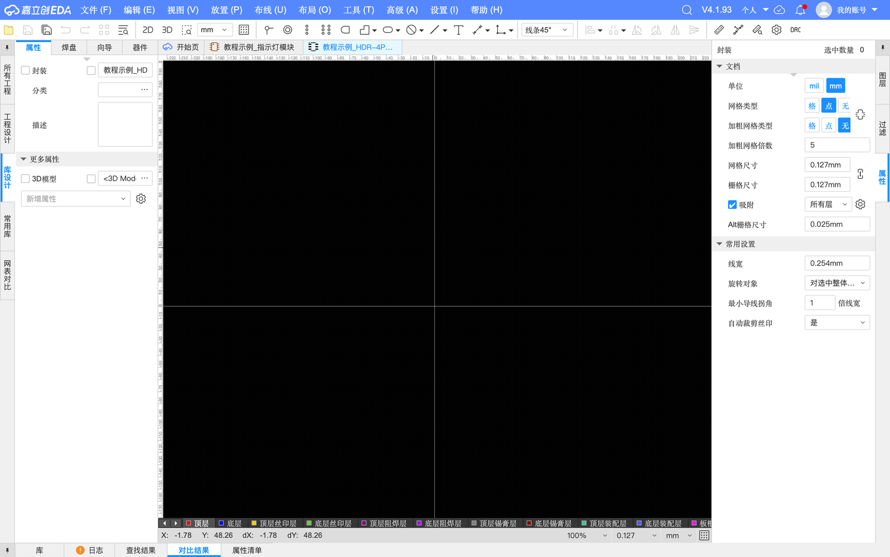
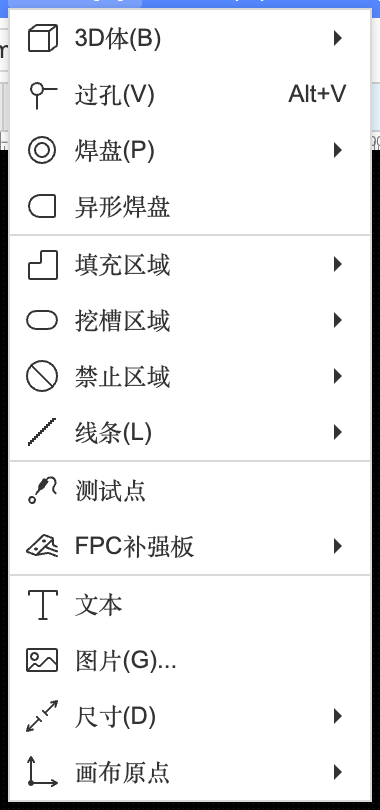
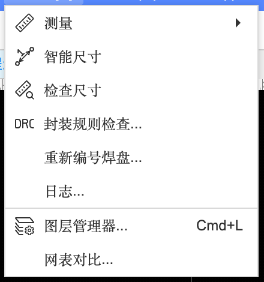
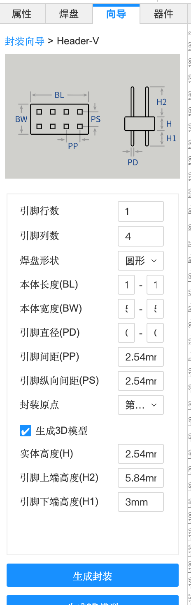
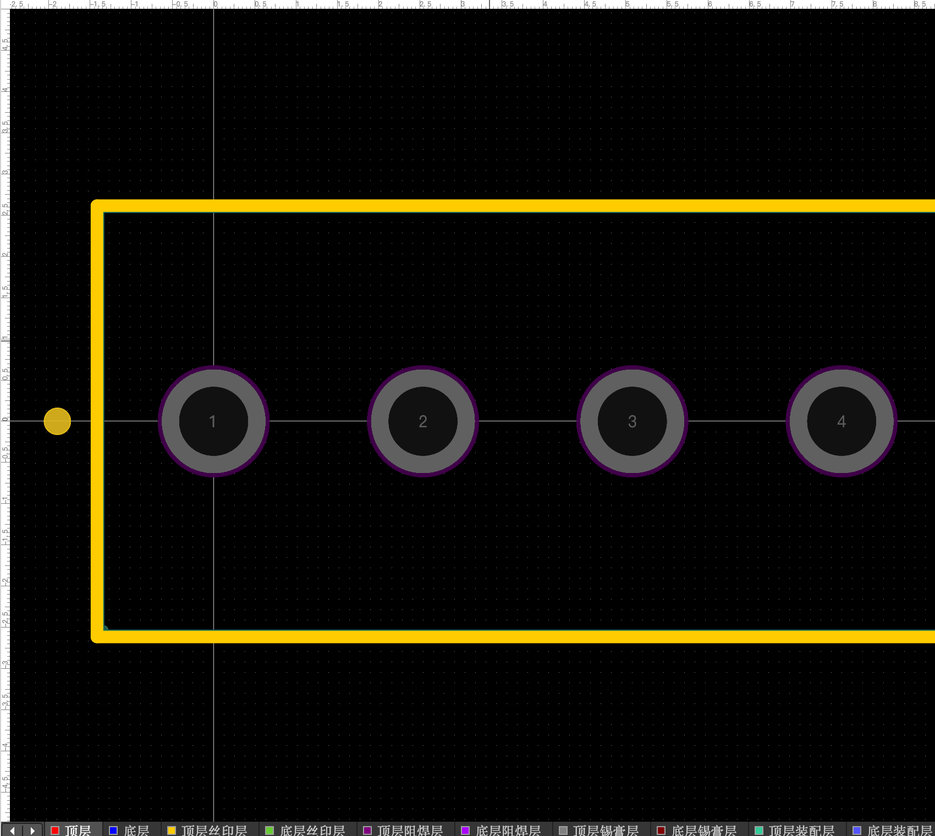
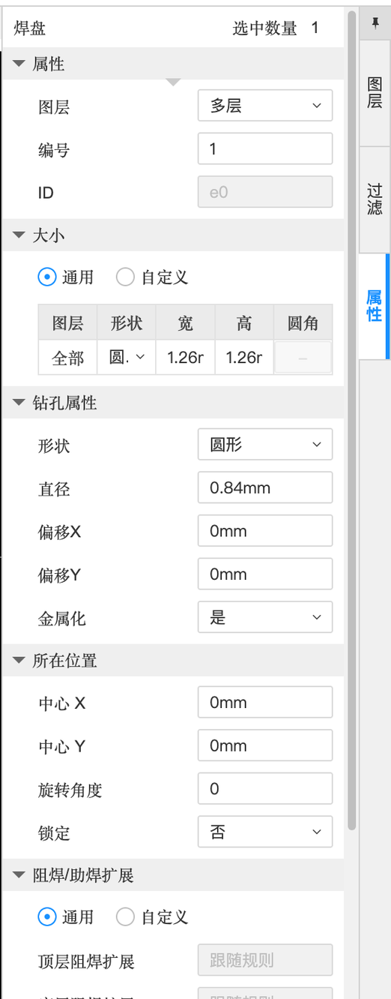
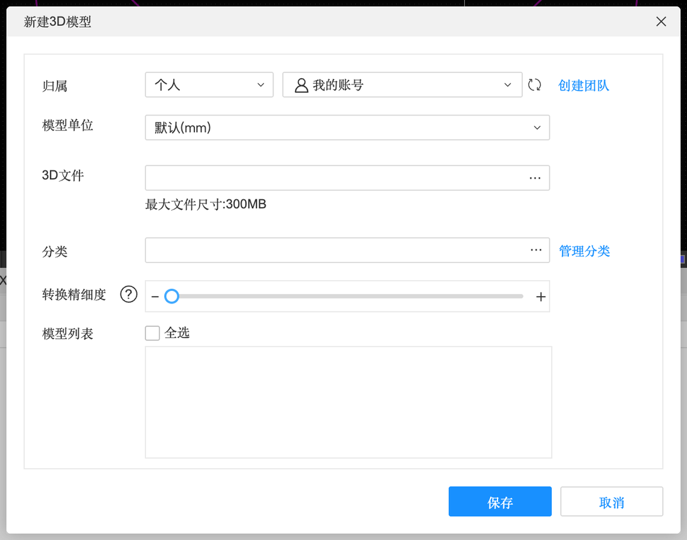
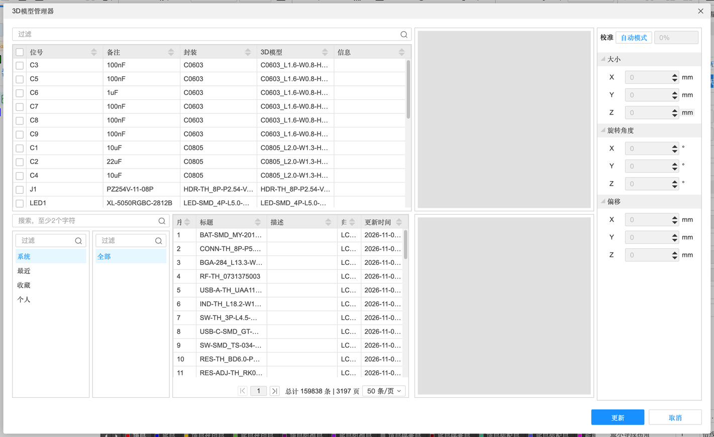

5.3 封装与 3D 模型
封装决定了板子上焊盘的位置和大小——画错 0.5 毫米，元件就焊不上去。这一页讲封装编辑器、封装向导、焊盘的每个属性，怎么照着规格书画封装，以及 3D 模型和库的维护。
封装编辑器#
「文件」→「新建」→「封装…」，填名称和分类后保存，打开封装编辑器。它其实就是一个“只有一个元件的小 PCB 编辑器”，黑色背景、有图层：



封装向导#
左侧「向导」标签里列出了常见封装类型，选一个、填几个尺寸就能生成：
| 向导类型 | 是什么 |
|---|---|
| Chip | 两端贴片元件：0402、0603 电阻电容等 |
| ChipArray | 排阻、排容 |
| Axial / Radial | 直插电阻（轴向，两条腿往两边）/ 直插电解电容（径向，两条腿朝下） |
| E-Cap | 贴片电解电容 |
| DIP | 双列直插芯片（如直插 NE555） |
| QFP / QFN / DFN | 四边扁平贴片芯片 / 四边无引脚 / 两边无引脚（引脚在芯片底下） |
| BGA | 底部是一排排锡球的芯片（新手别碰） |
| Header-V / Header-H | 排针：竖直 / 弯针（水平） |
本教程选 Header-V，做 1×4 排针：


Header-V 向导（实测默认值）
| 参数 | 含义 | 本例 |
|---|---|---|
| 引脚行数 / 列数 | 几排、每排几根 | 1 / 4（默认是 2 × 4） |
| 焊盘形状 | 圆形 / 方形等 | 圆形 |
| 本体长度 (BL) / 本体宽度 (BW) | 排针塑料座的大小，用来画丝印外框 | 默认 |
| 引脚直径 (PD) | 针脚粗细，决定钻孔大小 | 0.64 mm |
| 引脚间距 (PP) / 纵向间距 (PS) | 相邻针的距离 | 2.54 mm |
| 封装原点 | 原点放在第一脚还是中心 | 第一引脚 |
| 生成 3D 模型 + 实体高度 / 引脚上端高度 / 引脚下端高度 | 顺便生成一个 3D 模型 | 勾选 |
| 提示 | “生成的焊盘尺寸将稍微大于填写的尺寸，便于焊接” | — |
焊盘的属性#
单击选中一个焊盘，右侧属性面板列出它的全部参数：

焊盘属性
| 属性 | 含义 | 本例 |
|---|---|---|
| 图层 | 贴片焊盘在「顶层」；通孔焊盘在「多层」（穿透所有铜层） | 多层 |
| 编号 | 和符号引脚编号对应 | 1 |
| 大小：通用 / 自定义 | 通用 = 每层一样大；自定义 = 顶层、底层可以设不同大小 | 通用 |
| 形状 / 宽 / 高 / 圆角 | 焊盘的铜皮形状和尺寸 | 圆形 1.26 × 1.26 mm |
| 钻孔属性：形状 / 直径 / 偏移 | 孔的形状（圆形或长圆形槽孔）、直径 | 圆形 0.84 mm |
| 金属化 | 孔壁镀铜（是）还是光孔（否）。焊接的孔必须金属化 | 是 |
| 所在位置：中心 X / Y、旋转角度、锁定 | — | — |
| 阻焊/助焊扩展 | 焊盘周围的绿油“让开”多少（开窗比焊盘大一圈）；锡膏层扩展 | 跟随规则 |
| 热焊 | 焊盘和铺铜怎么连：发散（十字形细连接，好焊）或直连 | 跟随规则 |
其他封装工具#
- 智能尺寸 / 检查尺寸：测量焊盘间距，和规格书对比
- 封装规则检查：检查焊盘重叠、编号重复、丝印压焊盘等
- 重新编号焊盘：一次性按顺序重排焊盘编号
- 异形焊盘：不规则形状的焊盘（如散热焊盘、天线）
照着规格书画封装#
向导里没有的封装，就要照着元件规格书（datasheet）里的封装尺寸图画。尺寸图一般有两张：
- 元件外形图（Package Outline / Mechanical Dimensions）：元件本身多大、引脚多宽多长
- 推荐焊盘图（Recommended Land Pattern / PCB Layout）：直接告诉你焊盘该画多大、间距多少——有这张图就照它画，最省事
- 新建封装，单位切到 mm（Q）
- 「放置」→「焊盘」，在属性里输入宽、高；按推荐焊盘图的坐标一个个摆好（属性里直接填中心 X / Y 最准）
- 按规格书的引脚编号给每个焊盘设编号
- 切到「顶层丝印层」画元件外框，标出 1 脚位置（一个小圆点或缺角）
- 「工具」→「检查尺寸」量一遍，再跑「封装规则检查」
- 能买到实物最好打印 1:1 的 PDF（导出 PDF 选原始尺寸），把元件放在纸上比一比
3D 模型#


- 3D 模型只影响 3D 预览和导出给结构设计用的 STEP 文件，不影响电路、不影响生产。
- 三种来源：系统库自带；封装向导勾选“生成 3D 模型”自动生成简单方块；从厂家官网下载 STEP 文件导入。
- 在封装里绑定 3D 模型后，可以调整它的位置、旋转、高度，让它和焊盘对齐（3D 预览里看是否“悬空”或“插进板子”）。
库的维护#
| 情况 | 用什么 |
|---|---|
| 改了个人库里的器件，想让工程里的也更新 | 「设计」→「更新工程库…」（4.5，会清空历史记录） |
| 批量换器件 / 换封装 | 器件管理器 / 封装管理器（4.1） |
| 检查器件属性和立创商城是否一致 | 器件标准化（4.1） |
| 库里元件太乱 | 「设置」→「系统」→「分类」建分类文件夹（3.1） |